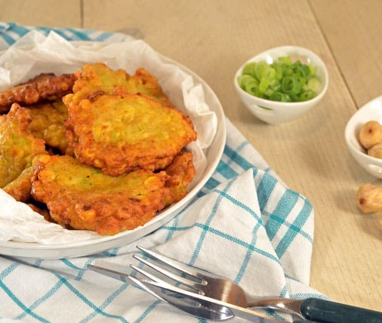

Maiskoekjes

Ingrediënten
- 150 gram mais (uit blik)
- 1 teentje knoflook
- 1 ui
- 1 tl korianderpoeder
- 2 lente-uien
- 1 tl laospoeder
- 1 tl komijnpoeder
- 1 tl kurkumapoeder
- 1 ei
- 1 el bloem
- olie om in te bakken
- sambal naar smaak
Bereiding
- Hak de ui, lente-ui en 2/3 van de mais fijn in een keukenmachine
- Klop het ei los en meng de specerijen en de bloem er door
- Meng het ui-maismengsel en de rest van de mais er door
- Verhit een laagje olie in de pan en schep hier kleine hoopjes van het beslag in
- Bak de koekjes aan beide kanten goudbruin (let er op dat ze niet te snel gaan, de binnenkant moet ook gaar zijn!) en laat uitlekken tussen keukenpapier
Bron
Terug naar de hoofdpagina